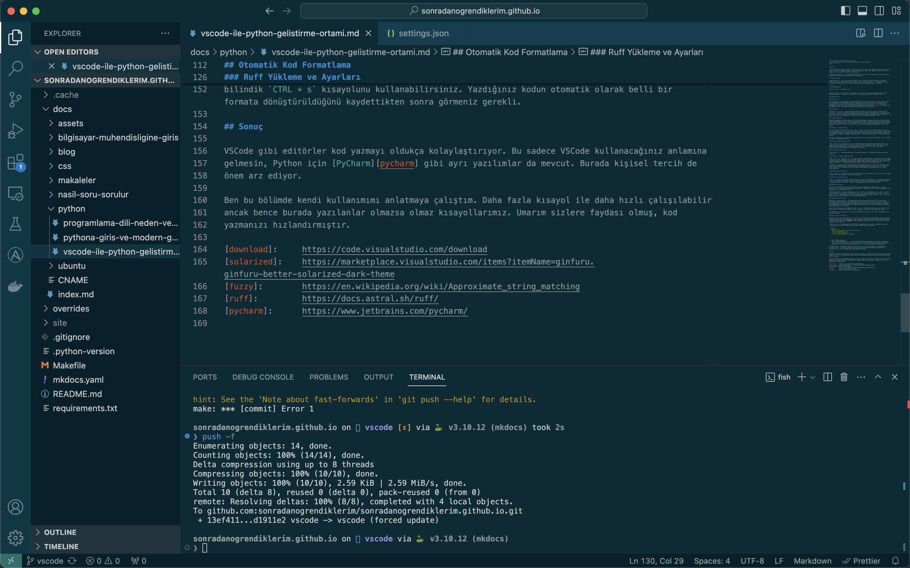

VSCode ile Python Geliştirme Ortamı
Giriş¶
Önceki bölümde kodlarımızı normal bir metin editörü ile açtık. Lakin Ubuntu ile gelen metin editörü bize çok fazla bir özellik sunmuyor. Bunun yerine Python yazmak için VSCode iyi bir tercih. En azından kişisel olarak bu şekilde tercih ediyorum.
Bu bölümde VSCode ile en çok kullanılan özellikleri, Python sanal ortamı nasıl kullanacağımızı ve VSCode'un bize sunduğu diğer özellikleri inceleyeceğiz.
VSCode Kurulumu¶
Burada sadece bir .deb uzantılı dosya indirip apt komutu kullanarak kuracağız. Öncelikle
VSCode indirme sayfasına gidip Ubuntu için .deb paketini indirin.
Sonrasında indirdiğiniz dizine konsol aracılığıyla girip aşağıdaki komutu çalıştırın:
Burada dosyaismi.deb indirdiğiniz dosyanın ismi olmalı. Kurulum tamamlandıktan sonra önceki
bölümde gördüğümüz ilkadim.py ve factorial.py dosyalarını VSCode ile açabilirsiniz.
VSCode'a Giriş¶
Renk Teması¶
İlk kurulum ayarlarını yaptıktan sonra öntanımlı renk teması yerine başka bir renk teması seçmeyi tercih edebilirsiniz. Bu ekrana saatlerce bakacağımız için öncelikli olarak size uygun temayı bulmanızı tavsiye ederim. Ben göz yormaması açısından Solarized Dark temasını kullanıyorum. Bunu sol tarafta tepeden 5. sırada bulunan kutucuk ikonuna (Extensions) tıklayarak yükleyebilirsiniz. Yükledikten sonra VSCode ayarlarından bunu seçmelisiniz.
Eklentiler¶
Eklentiler (extensions) bölümü VSCode ayarları yaparken sık kullanacağımız bir bölüm olacak. Birçok iş için eklenti halihazırda yazılmış durumda ve öncelikle buraya bakacağız. Yazının konusu geliştirme ortamını tanıtmak olduğundan ilerleyen kısımda Python kodlarımızı daha iyi yazmamız için başka eklentileri de yükleyeceğiz. Şimdilik sadece renk temasını yüklemeniz yeterli.
VSCode Kısayolları¶
Kısayollar hayatımızı kolaylaştırıyor. Sık olarak yaptığımız işlemleri kısayollar ile yapmak bize zaman kazandıracak ve saatlerce bunu yaptığımızı düşünürsek 1 saniyelik bir hızlanma bile toplamda bize saatler kazandırabiliyor. Bu açıdan benim bildiğim ve kullandığım kısayolları burada tanıtmak isterim. VSCode'un bütün kısayollarını bildiğimi veya kullandığımı söyleyemem ancak bunlar bana yetiyor.
Dosyalar Arasında Gezinme¶
En sık kullanılan kısayol diyebiliriz. CTRL + p tuşu ile proje içerisinde herhangi bir dosya
ismini arayabilir ve enter ile açabilirsiniz. Burada fuzzy search denen
bir yöntem kullanılıyor. Dosyanın ismini hatırlamak ya da tam yazmak zorunda değilsiniz, başından
veya sonundan herhangi bir kısmını yazmanız yeterli. VSCode bu noktada güzel bir biçimde tamamlama
sağlıyor.
Örneğin bu dosyanın ismi python-gelistirme-ortami.md ve bu dosyayı ararken sadece ortam yazmam
ve enter tuşuna basmam yetiyor.
Projenin Tamamında Arama Yapma¶
CTRL + Shift + f. Bu kısayol ile proje içerisindeki bütün dosyalarda arama yapabilirsiniz. Sol
tarafta bu arama kısmı kalacağı için tekrar geriye dönmek isteyeceksinizdir. Bunu da bir sonraki
kısayol ile başarabilirsiniz. Ben arama yaptıktan sonra her daim proje dosyalarını görmek
istediğimden bir sonraki kısayol ile beraber kullanıyorum.
Proje Dosyalarını Görme¶
CTRL + Shift + e. Arama yaptıktan sonra kullandığım kısayol. En baştaki proje görünüşüne geri
dönüyoruz.
Dosya İçerisindeki Tanımlarda Arama¶
CTRL + Shift + o (Ordunun O'su). Bir dosya üzerinde çalışırken bunun içerisindeki tanımlara kolay
erişmenizi ve arama yapmanızı sağlar. Python veya markdown ile belge yazarken dosyanın içerisindeki
tanımlı kısımlara atlamanızı kolaylaştırıyor. Bunu Python yazarken fonksiyonlara, değişkenlere ve
sınıflara ulaşmak için, Markdown yazarken başlıklara ulaşmak için kullanabilirsiniz.
ilkadim.py örneğine gidip bu kombinasyonu kullandığınızda daha net bir şekilde anlayabilirsiniz.
Dosya ismi aramasında geçerli olduğu gibi burada da arama metnini tam yazmak zorunda değilsiniz,
fuzzy search VSCode'un hemen hemen her yerinde geçerli ve işimizi kolaylaştırıyor.
VSCode Komutlarına Erişme¶
CTRL + Shift + p. Bu kısayol VSCode'un bütün komutlarına erişmenizi sağlıyor. Python sanal ortamı
seçmeden tutun bütün ayarlar buradan ulaşılabiliyor.
VSCode İçerisindeki Konsol¶
CTRL + j. Pencereler arasında geçmeden VSCode ile konsol kullanılabiliyor. Bu kombinasyon VSCode
içerisinde konsolu açmaya yarar. Ben bu konsolu kod yazdığım zaman kapatıp, ihtiyacım olduğunda
açarak kullanıyorum. Pencereler arası geçiş yapmadığım için de dikkatim dağılmıyor.
Python Sanal Ortamı¶
Konsolu açtığınızda Python sanal ortamı aktive olarak gelmeyebilir. VSCode bunun için proje
dizininde venv dizini varsa kullanımı sağlayabiliyor. Otomatik olarak kullanım sağlanmıyorsa yine
kısayolları le bunu başarabiliyoruz.
VSCode komutlarına erişirken kullandığımız CTRL + Shift + p kombinasyonu ile pyselect yazarak
buna erişebiliriz. Devamında size liste sunacaktır. Bu listeden projeye ait olan venv seçin,
konsola exit 0 komutu yazın ve konsolu tuş kombinasyonları ile tekrar başlatın. Her şey yolunda
giderse konsolda sanal ortamın seçili olduğunu göreceksiniz.
Otomatik Kod Formatlama¶
Herhangi bir projede tek kişi çalışıyorsanız problem olmayacak ancak birden fazla kişi dahil olduğunda problem olacak bir konu: kod formatlama. Her yiğidin ayrı bir yoğurt yiyişi olduğu gibi her programcının da kod formatlama konusunda ayrı birer fikri var. Durum bu olunca orta noktada bulunulabileceğini düşünmediğimden kod formatlama kararının başka birileri tarafından verilmesinin daha uygun olduğunu düşünüyorum.
Bunun için sektörde en sık kullanılan black ve isort formatlama araçları mevcut. Bunlar nasıl
formatlıyorsa o şekilde devam edeceğiz kararı aldıktan sonra bütün tartışmalar son buluyor.
Son zamanlarda bu iki ayrı aracı birleştiren ve daha hızlı çalışan ruff projesi yükselişte. Biz
bunu kullanacağız.
Ruff Yükleme ve Ayarları¶
VSCode'un eklenti ayarlarına gelin ve ruff eklentisini aratarak yükleyin. Ruff yüklememiz hemen kullanacağımız anlamına gelmiyor. Python dosyalarında dosya kaydedildiğinde otomatik olarak şekillendir şeklinde bir ayar yapmamız gerekmekte. Bunun için VSCode'un JSON ayar dosyasını düzenleyeceğiz.
CTRL + Shift + p kombinasyonu ile VSCode komut satırını açıp userjson yazdıktan sonra ayar
dosyasını açın ve düzgün formatlanmış şekilde aşağıdaki satırları ekleyin:
"[python]": {
"editor.defaultFormatter": "charliermarsh.ruff",
"editor.formatOnSave": true,
"editor.codeActionsOnSave": {
"source.organizeImports": "explicit"
}
}
JSON Formatlama
Bu bir JSON dosyası olduğu için virgüle dikkat etmemiz gerekmekte. Konfigürasyon dosyasının ortasına bunu eklerseniz bir önceki satırda ve bir sonraki satırdaki virgüllere dikkat edin ve bunun geçerli bir JSON dosyası olduğundan emin olun. Yoksa ayarlarımız çalışmayacaktır.
Bu ayardan sonra kodumuz her kaydedildiğinde otomatik olarak formatlanacaktır. Kaydetmek için
bilindik CTRL + s kısayolunu kullanabilirsiniz. Yazdığınız kodun otomatik olarak belli bir formata
dönüştürüldüğünü kaydettikten sonra görmeniz gerekli.
Sonuç¶
VSCode gibi editörler kod yazmayı oldukça kolaylaştırıyor. Bu sadece VSCode kullanacağınız anlamına gelmesin, Python için PyCharm gibi ayrı yazılımlar da mevcut. Burada kişisel tercih de önem arz ediyor.
Ben bu bölümde kendi kullanımımı anlatmaya çalıştım. Daha fazla kısayol ile daha hızlı çalışılabilir ancak bence burada yazılanlar olmazsa olmaz kısayollarımız. Umarım sizlere faydası olmuş, kod yazmanızı hızlandırmıştır.
